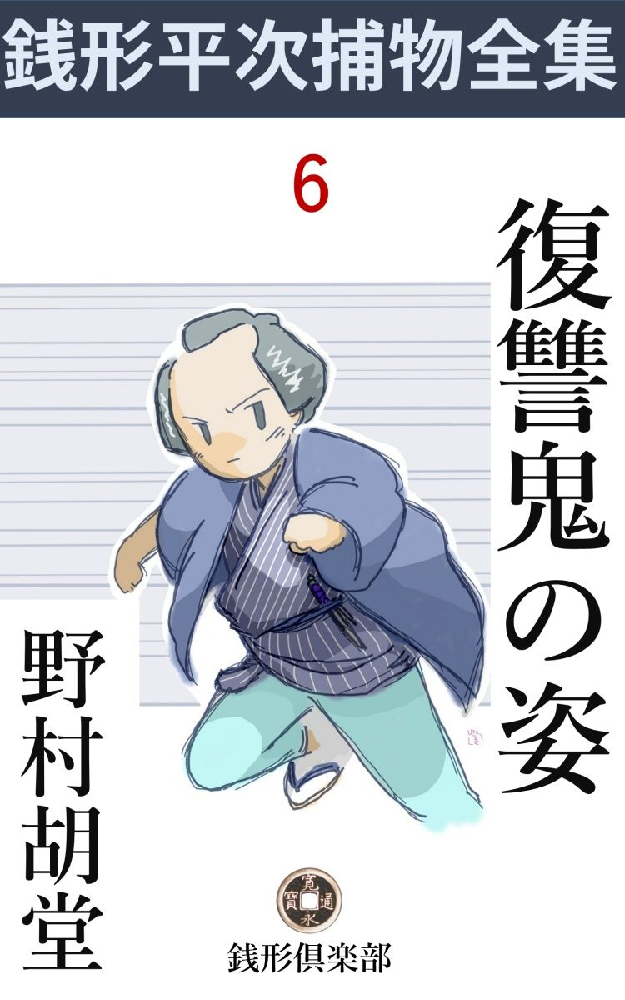
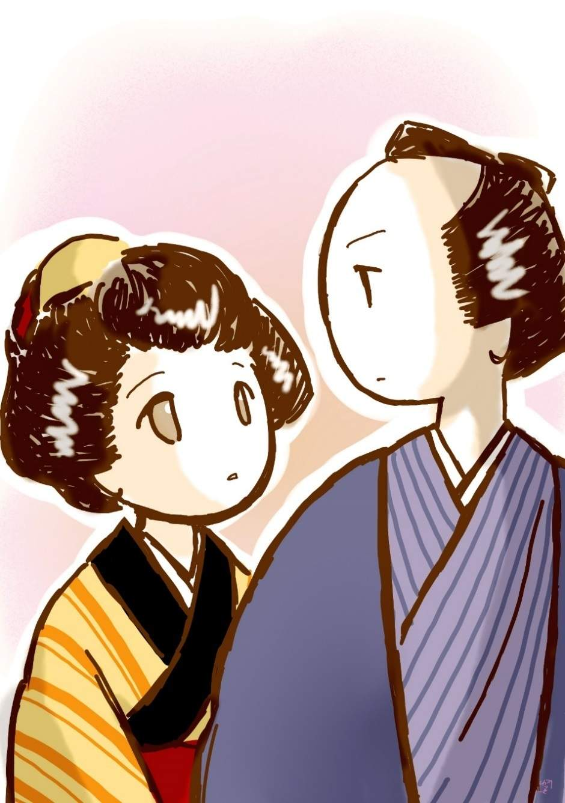

| 復讐鬼の姿: 銭形平次捕物全集第６話 (銭形倶楽部) | |
| 野村胡堂 | |
| ZENIGATA CLUB (2018) | |

一
「た、助けてくれ」
若党 の勇吉は、玄関の敷 台 へ駈け込んで眼を廻してしまいました。
八丁堀の与力 笹野新三郎の役宅、主人の新三郎はその日、鈴ガ森磔刑 に立ち会って、跡始末が遅れたものか、まだ帰らず、妻のお国は二三人の召使を供につれて、両国の川開きを見物かたがた、浜町の里方 に招かれて、これもまだ帰らなかったのです。
留守宅は用人の小田島伝蔵老人と、近頃両国の水茶屋を引いて、行儀 見習のために来ている、銭形平次の許嫁 お静。それに主人新三郎の遠縁に当る美しい中年増のお吉、外に下女やら庭掃 きやら、ほんの五六人がなりを鎮 めて、主人夫婦の帰りを待っておりました。
そこへこの騒ぎです。
「それッ」
と飛出してみると、玄関にへた 張った勇吉の背中には、主人新三郎の一粒種、取って五つの新太郎が、これも眼を廻したままおんぶしておりました。
「あッ、若様が」
「どうしたことだろう」
身分 柄 、贅沢な羅物 を着せた、男人形のように可愛らしい新太郎を抱き取って、医者よ、薬よという騒ぎ。幸い間もなく正気づきましたが、余程ひどく怯 えたものと見えて啜 り泣いたり顫 えたりするばかりで、容易 に口も利けません。
若党の勇吉は眼を廻したまま暫く玄関の板敷 に抛って置かれましたが、御方便なもので、これは独りで正気に還 りました。さすがに面目 ないと思ったのか、コソコソ逃げ出そうとすると、
「これこれ勇吉」
小田島老人が後ろから呼止めます。
「へエ、へエ」
「一体これは何という態 だ。大事な若様を預 りながら、腰を抜かしたり、眼を廻したりする奴があるかッ」
「へエ------」
「第一、何んでお前だけ先に帰って来たのだ。奥様方はどうなすった。判然 言えッ」
昔気質 で、容赦 がありません。
「へエ------」
勇吉というのは、二十五六の好い若い者、見たところは、充分 賢 そうでも、強そうでもあるのですが、何の因果 か生れ付きの臆病者で、------『腰抜けのくせに勇吉とはこれ如何に？』------などと、のべつに朋輩 衆から揶揄 われている厄介者だったのです。
「頭を掻いて済むどころではない。何が一体お前を取って食おうとしたんだ、言わないか」
「へエ------、どうも相済みません。両国の人混みの中で、奥様やお女中方を見失ってしまいましたが、どうせお帰り支度のようでしたから、浜町へ一言お断りして、若様をおんぶしてやって来ると------」
「------フム」
「どうも------、人間が皆んな両国に集まってしまったせいか、今晩の江戸の淋しさというものはありませんでしたよ」
「馬鹿野郎」
「どこへ行ったって人っ子一人いやしません。背中 の若様といろいろお話をしながらやって来ると、人形町の往来で、いきなり前に立ちはだかった者があるじゃありませんか。何だろうと思って、ヒョイと見ると、ブル、ブル、ブル」
「確 りしろ、何て間抜けな声を出すんだ。好い若い者の癖 に」
「それがその、一件なんで」
「何だ、一件というのは」
「磔柱 を背負 った、血だらけな男で------」
「えッ」
「今日鈴ヶ森でお処刑 になった、お主 殺しの何とかいう野郎ですよ」
「そんな馬鹿な事があるものか」
「馬鹿だか馬鹿でねえか、若様に聞いてみりゃア判ります。------ハッと思って駆 け抜けると、そいつが又執念 深く追っかけて来るじゃありませんか。人形町から八丁堀まで駆け通し、お屋敷の玄関へ着くと気がゆるんでブッ倒れてしまいましたが、まだ門のあたりに磔柱 を背負った血だらけな奴がいやしませんか、そっと覗 いて見て下さい」
歯の根も合わないような恐怖 のうちに、これだけ話の筋を通すのは、勇吉にしては全く手一杯の努力でした。
「そんなものがいてたまるか、馬鹿野郎。確 りしろ、皆んなお前の臆病がさせたことだ」
小田島老人はまるで相手にしません。
「そう言ったって、途中でブッ倒れずに、ここまで辿り付いたんだから、少しは褒めてやって下さいよ。背中に大事なお主がいらっしゃると思って、一生懸命気を張り詰めたんだ。ね、そうじゃありませんか」
「目の廻しようを自慢するんじゃあるまいネ、呆 れた野郎だ。この上若様の御容体が悪かったら勘弁 しないぞ」
「へエ------」
この騒ぎの中へ、主人笹野新三郎と、妻のお国は相前後して帰って来ました。
二
与力笹野新三郎一家に対する不思議な祟 りは、これをキッカケに、執念深く繰 り返されました。
伜 の新太郎があの晩から虫を起して、夜もおちおち眠られない有様。若い母親のお国の心労 は一と通りではありません。
その晩も漸 く新太郎を寝かし付けて、さて雨戸を締 めようとすると夜更 けまで開けて置いた窓の障子へ、遅 い月に照されて、ハッキリ映っているものがあります。
ハッと思って見直すと、紛 れもない人間の生首。
「あっ」
お国は思わず声を立てました。
しかし、さすがは武家の女房で、生れ落ちるから躾 みを教わっておりますから、その上騒ぎ出すようなことはしません。
そっと床 を脱 け出して、隣りの室に寝ている夫新三郎を揺り起 しながら、
「旦那様、旦那様、一寸、お目に掛けたいものが御座います」
と囁 きます。
「何だ、泥棒でも入ったというのか」
一刀を提 げて、寝巻のままでやって来た新三郎。お国の指さす方を見て、これも思わずギョッとしました。
遅い月が一杯に射した窓格子に、生首が一つ、髻 を格子 に絡 んだまま、ブラ下げてあったのです。
「フーム」
新三郎は一度は唸 って躊躇 いましたが、次の瞬間には、障子に手を掛けるとサッと引開けました。
水の如く流れ入る月影。
その青白い光を半面に受けて、窓格子に括 し付けられているのは、血だらけの中年男の生首 、カッと眼を見開いて、白い歯に下唇 を噛んだ、怨 みの物凄 い形相は、二た眼と見られません。
「あッ」
お国は気が遠くなったようにそこへ崩折 れると何に驚いたか、寝付いたばかりの新太郎は、火の付くように泣き出しました。
笹野新三郎の記憶にはこの首の相好 が焼き付くように、まざまざと残っております。忘れもしないそれは、今日鈴ガ森の処刑 場 で打ち落した首の一つ、死に際まで生の執着 にもがき抜いて、一番醜 い、一番物凄い最期 を遂 げた、贋金 使いの男の首だったのです。
それから引続いて起った不祥事は、不思議なことに、なにか、お仕置のある日に限られておりました。丁度吟味与力笹野新三郎を忌避 して、無実の罪を訴えでもするように、生首と死体とが実に頑固 な威嚇 をくり返しました。
いろいろ人手を殖やして、締りや夜廻りを厳重にしましたか、結局は何の験 もありません。家の中へ入られないと見ると、お処刑場から盗んで来た不浄のものを、塀の外から庭へ投込んで、スタコラ逃げ出してしまうのです。
「旦那様、何とか遊ばして下さいまし。このまま抛 ってお置きになると、相手は増長して、何をやり出すか判りません」
お国は時折そんな事を言って、夫新三郎の決意を促 しますが、新三郎にはどんな考えがあるか、それを取上げようともせず、言葉少なにうなずく日が多くなるばかりでした。
三
思案に余ったお国は、夫新三郎の留守の時、そっと石原の利助を呼んで、相談して見る気になりました。
お国は二十六の女房盛り、美しさも賢 さも不足はなかったのですが、伜新太郎の容体がはかばかしくないのに、後から後からと不気味な事ばかり続いては、ツイ我慢がしきれなくなってしまったのです。
「利助、こういうわけだ。役目 柄 、こんな事が世間に知れてはまずいが、何とかなるものなら、一と骨折ってはくれまいか」
と言うと、
「よく判りました、奥様。何の、多寡 が白痴 脅 かしの化物ごっこぐらい、口幅 ったいことを申すようで恐れ入りますが、この利助の黒い眼で睨めば、一と縮みで御座いましょう」
利助は大呑込で、少し光沢 のよくなった中 額 をツルリと撫で上げます。銭形の平次と同じように、笹野新三郎には恩顧を受けている御用聞ですが、近頃は若い平次の評判が馬鹿に良いので、少しはムシャクシャしているところへ、お国がこんな相談を持ちかけたので、渡りに船の心持で乗り出してしまったのでした。
「これは矢張り、内に手引するものがありましょう。外からだけでは、そんな器用なカラクリは出来るものじゃ御座いません。唯今お屋敷にいる人別を片っ端から仰しゃって下さいまし」
「主人と私と坊やの外には、身内の者というと、主人の遠縁で、お吉さんというのがいるよ。年は私と同じ二十六で、それは美しい人だが、お前は逢 ったことがなかったかねエ」
「いえ、存じております。もと何んでも旦那様のところへお嫁 にいらっしゃるようなお話のあったのが、御両親がお亡くなりになって、そのまま縁談は流れ、それっきりお宅の掛 人 になった方で御座いましょう」
「よくお前、そんな事まで」
「へッ、へッ、商売商売で、そんな事に抜け目は御座いません」
「気味が悪いねえ」
「疑 えば、先ずその方が疑えるわけで御座いますね。旦那にも奥様にも、そう言っちゃ何ですが、怨 みがましい心持を持つとすれば、このお屋敷の中では、その方が一番強いわけで------」
「そうねえ、そう言えば言えないこともないけれど、お吉さんはそりゃいい方なんだよ」
「大それた事をする人間は、思いの外人 触 りのいいもので御座います。それから外には」
「あとは奉公人ばかし。先ず用人の小田島さんに」
「あの方は化物とは縁が御座いません」
「若党の勇吉------」
「あの臆病 者 の？」
「それに、平次の許嫁 のお静」
「フーム」
お国は片っ端から雇人 を数え上げましたが、石原の利助の興味をひいたのは、お吉一人だけ。
「そのお吉さんを呼んで頂けませんでしょうか」
「そんな事をしたら、一ぺんに主人へ知れてしまいます」
「構 やしません。今のうちに睨 みを利 かして置かないと、増長してどんな事をするか解りゃしません。それに旦那様は下総 の御領地の方へお出かけだそうじゃ御座いませんか」
「知行所の世話番の方が御病気で、その代理にいらしったから、四五日はお帰りがないだろうよ」
「丁度いい塩梅じゃ御座いませんか。鬼の留守と言っちゃなんですが、その間に埃 の出るものなら、引っ叩いて見ましょう」
事毎に若い平次にしてやられて、少し功を急ぐ心持のある利助と、賢いようでも、夫新三郎と縁談の噂まであったお吉に対して、日頃妙に嫉妬 を感じているお国とが、到頭大変なところで意見が投合してしまったのです。
四
こう屋敷中で見張っているところへ、新太郎の膳のお菜 の中へ、石見 銀 山 の鼠捕りを入れたものがありました。幸い子供心にも、匂 いを嫌って食べなかったから助かったものの、そうでもなければ、一たまりもなくやられてしまったところでしょう。
お国はツイかっとしてしまって、石原の利助を呼寄せ、二人相談の上、主人新三郎は留守ですが、取敢えずお吉を一と間に閉じ籠め、利助は丁寧な口調ながら、水も漏らさぬ調子で一と責め責めて見ました。
「ね、お吉さん、こんな事を言いたくないが、細工が器用過ぎて、お前さんのような方でなきゃア、出来ない芸当だ。旦那様や奥様を怨 むのももっともだが、何にも知らない若様を脅 かしたり、石見 銀山で命まで奪ろうとするのはヒドかろう」
「あれ、お前は何を言うのだい。本当に呆 れて物が言えない」
「白 ぱっくれちゃいけねえ。ここで口を開かなきゃア、お白洲 の砂利 を摑 ませるばかりだ。穏便に願って身を退 く方が、お前さんの為じゃないかね」
「まア、何という事だろう。この間っからの不気味な悪戯 が私の仕業 だとでも言うのかい」
今では掛り人で、奉公人も同様ですが、もともと育ちのいいお吉は、老獪 な岡っ引に絡 んで来られると、口もろくに利けません。おろおろしながらこんな事を言うのが精々、利助の張り渡した罠 に掛って、やがてはどんなことになるか判らない有様です。
「お前さんは、旦那様と奥様の仲の好いのを好い心持で眺めているわけじゃあるまい」
「そりゃア私だって人間だもの、でも------今では何も彼もあきらめているんだから、お主 だと思ってお勤めしているよ」
「うまく言うぜ、そんな甘い口に乗るものか。兎に角、お前さんを放し飼いにして置いちゃ物騒で叶 わねえ。窮屈 でも旦那様のお帰りまで、ここで我慢をして貰おうか。もっとも、その間俺が伽 をしてやるから、淋しがらせるような事はねえ」
到頭お吉を納戸 に投 り込んで、利助が鵜の目鷹の目で見張ることになってしまいました。
驚いたのは、お吉と一番仲よくしていたお静です。
平常 から心掛の良い、少し気の弱いお吉が、どんなに嫉妬 に眼が昏 んだにしても、そんな大それた事を仕出かそうとは思われません。一言お吉のために------と思わないではありませんが、奉公人の悲しさで、奥様へツケツケと意見がましい事が言える身分でもなく、それに、お吉を封じ込んだ納戸の前には、少しばかり職業的な物凄さを持った、老獪 無比の岡っ引が、鼠一匹も唯 では通さじと見張っているのです。
思案にくれているところへフラリとやって来たのは、お静とは許嫁 の仲の、銭形平次です。
新三郎はまだ下総 から帰って来ないので、用事は足りませんが、奥へ一寸挨拶をして、何の気もなくお勝手へ下がろうとすると、日頃仲のよくない石原の利助が、閉めきった納戸の前に座布団を敷いて、少し脂 下 りに安煙草の輪を吹いております。
「お、石原の兄哥。どうしたい」
「銭形のか、久し振りだったな」
「駆け違って久しく逢わねえが、そこで何をしているんだ」
「なアに、何でもねえよ」
「------」
少し妙な調子------、頭の早い平次は、仔細 ありと見て取って、その上追及をせずに、天気の挨拶かなんかをして引下がってしまいました。
お勝手口から、八丁堀の往来へ出ると、
「ちょいと、親分、待って下さいな」
少し息を切って追って来たのは、先刻お勝手でチラリと顔だけ見せたお静です。
「何だ、お静 い坊 か。親分てえ奴があるかい」
「だって、私には何と呼んでいいかわからない」

「まアいいやな。まさかこちの人とも言えまいから、何とでも言って置くがいいやな」
「あら」
「ところで用件は何だ。美しいところを見せようって寸法ばかりじゃあるまいね。大方納戸の前に頑張 っている石原の一件だろう」
「え、そうよ、大変な事が始まったんです。お吉さんが可哀そうで、可哀そうで」
「何をいきなり涙 含 みゃがるんだ。順序を立てて話して見るがいい」
捕物の名人銭形の平次と一時両国で鳴らした美しいお静とは、人目と陽射 しを避けて、街の片蔭へ入りました。
五
それから銭形の平次は、お静と諜 し合せて、死物狂いの活動を始めました。まかり間違えば、一方ならぬ恩顧 を蒙 った笹野一家に、拭うことの出来ない瑕瑾 の付く事件ですから、主人新三郎の帰りを便々として待っているわけには行きません。
石原の利助はすっかりお吉を張本人と決めてしまって、屋敷の外から呼応した、相棒の名を言わせようと、手を替え、品を替え責 め立てますが、お吉は執拗 に口を緘 んで、悲しくも眼を伏せるばかり。まさか拷問 にかけるわけにも行かず、二三日の後には、石原の利助も少し持て余し気味になりました。
一方、その間に平次は、第一番に奉公人の身許を洗って見ました。小田島伝蔵老人の三十何年を始め大抵 は五年十年と勤 めた者ばかり、一番短いので一年以上ですから、主人を怨む者があろうとも思われません。
お仕置 のある度に、何か嫌がらせな悪戯 をした事を思い付いて、この三年の間に、笹野新三郎の手掛けた事件で、無理な罪に落された者はないかと、いろいろ調べて見ましたが、笹野新三郎は近頃の名与力で、辛 辣 な加役などからは、手緩 いと評判を取っている人物、人に怨まれる筋などがあろうとも思われません。
平次の調べは遅々 たるうちに、又もう一つ大変な事が起ってしまいました。
それは、近頃はすっかり丈夫になってお静と一緒に庭や門の外まで遊びに出ていた新太郎が、水天宮様の縁日 へ行って見たいと言い出したのです。
お国も思案に余って利助に相談すると、新太郎へ祟 ったお吉はこの通り取っちめているから、大概 大丈夫だろうという話。子供には甘過ぎるお国は、それでもと留めるほどの母親ではありません。
念のため、お静の外に勇吉を附けてやりましたが、それから二た刻あまり、日が暮れそうになって、勇吉がたった一人。
「若様とお静さんはまだ帰りませんか」
フラリと、気楽な顔をして戻って来ました。
「坊やとお静が、どうしたと言うのだい」
お国も驚いて飛んで出ました。
「お静さんが知ってる人に逢って、境内 の水茶屋に入りましたが、何時まで経っても出て来ません。どうかしたら裏から帰ったのじゃないかしらと思って戻って参りましたよ」
という気のない話です。
「それッ」
と手分けをして、八方を探しましたが、どこへ行ったか、新太郎とお静の行方 は更にわかりません。
水茶屋で聞くと、混んでいる最中で、気が付かなかったと言い、お静の里やら平次の留守宅やら、心当りへ全部人を出しましたが、どこへも行った様子はなく、二人の姿は、水天宮様の境内から、煙のように消えてしまったのではないかと思うような、見事な失踪 ぶりです。
お国は気も顚倒 して、
「坊やを探しだした者には、望み次第の褒美をやる」
と言いますが、これだけに手際よく誘拐 されては、手の付けようがありません。
その騒ぎの中へ、一人の女中が変なものを持って来ました。
「唯今、お勝手口へこんなものを投 り込んで行った者が御座います」
と差出したのは、急 拵 らしい結び文。
「どれどれ」
利助が受取って中を開くと、拙い仮 名 文 字 でたった三行ばかり。
------新太郎を殺したくなかったら、お吉をゆるせ。その女に罪はないぞ------
と書いてあります。
「畜生ッ、人を嘗 めた事をしやがる。外 にいる仲間が、お吉を助けようとしての細工だ」
利助は地団駄 ふんで口惜しがります。
「坊やに万一の事があってはならない。口惜 しいけれど、その女を納戸から出して、どこなと、好きなところへやっておくれ」
お国はさすがに母親らしい弱いことを言いますが、
「飛んでもない奥様、これは術 ですよ。女を助けたところで若様を返すとは言やしません。それよりこの女をお白洲 に突き出して、言わせるようにして物を言わせましょう。この女さえ口を開けば、何も彼も判ってしまいます」
利助は意地になって聴き入れません。
「どうなとお前のいいようにしておくれ。私には、何が何だか判らない」
お国は精も根も尽き果てて、たださめざめと泣くばかりです。
「よし、この上は容赦 しねえ。女来い」
納戸を開けて、三日越しの監禁に、すっかり弱り果てているお吉を引出しました。
「これ、何をするのさ」
「黙って来てみりゃ判る。それが嫌なら、相棒の名前とその巣を言えッ」
いきなりねじ倒して、悲鳴をあげるお吉の腕を後ろに、キリキリと縛り上げてしまいました。
「邪魔が入ると面倒だ、歩けッ」
邪慳 に縄尻を引くと、
「あッ、ッ」
悲鳴をあげてお吉は縁側に倒れかかります。
六
平次が飛込んで来たのは、丁度その後------。
「若様がお見えなさらない？ 何ッ、水天宮様で誘拐 されたッ」
お勝手から奥へ真一文字に、
「奥様、大変なことになりました。さぞ御心配でいらっしゃいましょう」
今度の事件では、面白くないことばかりの平次ですが、こうなっては遠慮してもいられません。敷居の外から声をかけて、お国の機嫌を伺います。
「お、平次よく来てくれた------。どうぞ坊やを助けてやっておくれ、お願いだよ」
日頃の嗜 も忘れて、しどろもどろに取乱しております。
「石原の兄哥はどうしました」
「お吉さんに縄を打って、どうしても仲間の事を白状させるって、奉行所へ行ったよ」
「えッ、そんな、そんな無法な事を」
「そうでもしなければ白状する女ではない」
「飛んでもない、お吉さんは何にも知っちゃいません。それより吟味与力のお家から、縄付を出してその納 りがどうなると思います」
「え？」
「軽くてお役御免、重くて食 禄 召 し放し。旦那様が家事不取締の罪は免 れません」
「えッ」
「それでなくてさえ、お若くて切れものの旦那様、お役所向きは味方ばかりと思うと大当て違い、これは飛んでもない事になりましたなア」
平次の恐れるのはそれでした。吟味 与力 で相当に敵も作っている笹野新三郎が、家族から縄付を出して晏如 としていられる道理はありません。
お国は女で気がつかないのも無理はありませんが、そんな事は百も承知の助の石原の利助が、宵とは言っても、人の目につかないとは限らない縄付を、与力の家の門から引張り出して、わざわざ奉行所まで伴れて行くとは何としたことでしょう。
「若様は急に命に拘 わる事もありますまい。それより大事なのは、お家の瑕瑾 にもなる縄付の始末です。利助は何時頃ここを出かけました」
「ツイ今しがた」
お国はさすがに恥入って顔も挙げません。
「それでは及ばぬまでも追っかけて見ましょう。御免」
平次は挨拶もそこそこ、真一文字にお勝手へ抜けて、数寄屋橋の南町奉行所まで、韋駄天 走りに駆け付けました。
七
三十間堀へ来ると、宵暗 ながら、向うへ急ぎ足に男女の人影。
「石原の、ちょいと待って貰おうか」
平次は飛鳥 の如く駆 け抜けて、二人の前へ立ち塞 がりました。
「何だ平次か、何の用だ」
石原の利助は、以てのほかの機嫌で平次を見据えます。
「お吉さんは何にも知っちゃいねえ。気の毒だが縄を解いて渡して貰えまいか」
「何を言やがる。こっちには証拠があってすることだ。十手捕縄を預かる利助に、人を縛っちゃならねえという法でもあるのか」
「そうじゃないよ、兄哥。吟味 与力 の笹野の旦那のお屋敷から、縄付を出したとあっちゃそのままじゃ済むめえ。お互い旦那には言葉に尽せねえ恩を受けている身体だ。よしんばどんな証拠があったにしたところで、お吉さんにお白洲 の砂利 を噛ませて、笹野の旦那の破滅 にはしたくねえ。解ったかい、石原の、お願げえだから、その縄を解いて俺に渡してくれ。あの悪戯者や誘拐 の悪者は、俺がキッと探し出して、お前 の手柄にさしてやる」
「えッ、何を言やがる。黙って聞いていりゃ、悪者を縛って、俺の手柄にさしてやるッ？ 若僧の癖にしやがって何て口の利きようだ、憚 りながら石原の利助は手前 よりは十年も前から十手を預かってるんだぞ。帰 えれ、さっさと帰えりゃがれ、尻尾を巻いて消えてなくならないと、只は置かねえぞ」
「それじゃ、兄哥、これほどまでに頼んでもか」
「知れた事を言えッ、この女は近頃の大物だ。手前 などに横奪りされてたまるものか」
「えッ、聞分けのない。笹野の旦那のためだ」
飛付くようにお吉の縄尻を引ったくって、急 しく解きにかかると、
「何をしやがる」
利助は年甲斐もなく、平次へ武者振り付きます。
「兄哥、勘弁してくんな」
身体を捻 った平次、よろめく利助の後ろから、力任せに突き飛ばすと、一とたまりもなく道端の濠 の中へ。
「あッ」
折からの上汐 、あっぶ、あっぷとやる利助を尻目に、
「詫 は後でする。兄哥勘弁してくんなよ」
お吉を促 して元来た道へ、平次は飛ぶが如く取って返します。
八
平次が利助を追って駆け出した後------。
笹野新三郎は下総 から帰って来ました。虫が知らせると言うものか、妙に里心が付いて帰って来てみると、丁度下 総 の知行所へ急使を立てたばかりというところ、家の中は煮 えくり返るような騒ぎです。
「お国や奉公人達から、いろいろ話を聞いて、驚きに驚きを重ねていると、先刻水天宮様からぼんやり帰って来た勇吉が庭口からヒョックリ顔を出して、
「旦那様、今思い出しましたが、水天宮様の水茶屋へ、お静さんを誘 い入れた男が判りましたよ」
妙な事を言い出します。
「何だって今まで黙っていたんだ。誰だ、その男というのは？」
「すっかり忘れていました。------その男てえのは、名前はわかりませんが、なんでもお茶の水辺の男で------」
「家は知ってるか」
「行ってみたら大抵 見当はつきましょう」
「よし、それじゃ案内しろ」
新三郎は、飛立つ思い、旅装束のまま、駕籠を二挺 呼んで、驀地 にお茶の水へ------。
昌平 橋 まで来ると、
「ここで降りて歩かなきゃアなりません。駕籠で行っては拙 い」
案内者の勇吉がとんでもないことを言い出します。
仕方がないから駕籠を帰して、勇吉を先に立てた新三郎。聖堂 の前をダラダラ登って、お茶の水の方へ、その頃は橋はありませんが、眺めの良いところで、数丈の断崖 の上へお茶屋が二三軒建ち並んでおります。余談にわたりますが、その後江戸名所図会 を描 いた長谷川雪旦 が、ここのお茶屋で風景を写生して、謀反 人 と間違えられた------などという話の伝わっているところです。
お茶屋といったところで、道端に建った粗末な板屋根で、お茶の水の絶壁数丈の下から、足場を組み上げて張り出した、葭簀 張りの涼しい別室が名物。昼はいくらか客もありますが、日が暮れるとサッサと店をしまって、婆さんと娘が、菓子箱と緋 毛氈 を背負い、大 薬罐 をブラ下げて自分の家へ帰ってしまいます。
もっとも、この辺一帯、聖堂の前から元町へかけては、恐ろしく淋しいところ。明治になってからでさえ、松平某の皮剥 事件があったくらいですから、旧幕時代は追剥と辻斬りの本場といってもいいところだったのです。
臆病者の勇吉が、そこへスタスタと入って行ったのですから、笹野新三郎も少し面 喰 いました。
しかし、一子新太郎の生死にも拘 わる場合、贅沢を言っている時ではありません。勇吉の後について、黙って行くと、三軒ある断崖の上の茶店の一番奥、久しい前から立腐 れになっている家の表戸を開けて、
「ここで御座いますよ、旦那」
勇吉は案内顔に入って行きます。
「ここに新太郎がいると言うのか」
「確 かにここに相違ありません。灯 りを用意して来ますから、ちょいとお待ち下さい」
新三郎を中に誘 い入れて、勇吉はその儘外へ出てしまいました。
暫く待ったが帰って来ません。何分ひどい闇で一寸先も判りませんが、床板一枚の下は、数 丈 の絶 壁 ということだけは、遥かに聞える水音で判ります。
「ハテ」
新三郎は立上がりました。愚直 な勇吉を信じきってはいますが、何となく不安な心持になったのでしょう。立上がって戸口の方へ探り寄ろうとすると、床板 の釘が抜けていたものか、それとも、陥 穽 の仕掛になっていたものか、足の下の板が一枚、パッと跳 ね返ると、
「あッ」
新三郎の身体は、数十尺の下へ、支 えるものもなく落ちて行きます。
九
「へッ、へッ、到頭陥 ち込みゃがったか」
どこからともなく、闇の中の人声。
燧 石 に鎌 の当る音がすると、パッと蠟燭 が点された。
見るとそれは、今まで臆病 者 とばかり思い込ませていた若党の勇吉。妙 に引 緊 った凄い顔をして、裸蠟燭を片手に、新三郎の陥ち込んだ穴を覗きます。
「おーい兄哥 」
「勇吉か」
遥 かに下からは応ずる声。
「野郎はどうなった」
「まだ落ちて来ねえぞ」
「そんな事があるものか」
「落ちて来さえすりゃア、ボチャンとか何とか音がするだろう------万一舟か岸へ這い上がるようなら、竹槍 で芋刺 にするつもりで待っているが、一向音沙汰はねえぞ」
「はてな」
勇吉は左手の蠟燭を穴の中へ差し込むようにして下を覗きました。
「あッ、いるぞ、いるぞ」
「それ見ろ」
床の下の逞 しい梁 から垂れた握り太の麻 縄 。その中程のところに、雁字 がらめにして猿轡 を噛ませた、新太郎とお静を吊 してありますが、その縄の上から三分の一のほどのところに、もう一人、人間がブラ下がっているのです。
言うまでもなく穴から落ちる機 みに、運よく麻縄を探り当てた笹野新三郎、無我夢中で獅噛 み付きましたが、身体が落ちる勢いが付いていたので、両手の掌 をひどく磨り剥 いたために、麻縄を掴 むには掴んだものの、手繰 って上がることが出来ません。
歯を喰い縛って辛くも身体を支 えているうちに、上から射した蠟燭の光で、自分をこの九死の境 に陥 れたのは、臆病者の勇吉だとはわかりましたが、下の舟にいる相棒がわかりません。
その顔を見るつもりで、大骨折で身体をねじ曲げると、最初に眼に映ったのは、舟の中の曲者ではなくて、自分の足の下、同じ麻縄に縛られて、宙 にブラ下がっている、伜新太郎とお静の浅ましい姿です。
「あッ、新太郎。------お静も」
と言ったが、どうすることも出来ません。
上の勇吉は早くもそれに気が付いたか、
「旦那、気が付きなすったかい。父子主従 三人一緒に死ぬのも因縁 事だ。へッへッ、却 ってあきらめが付いてようがしょう」
憎々しくも歯を剥きます。
「勇吉、お前は何んだってこんな事をするんだ。随分目をかけて使ってやった筈だが、何の怨 でこんな非道なことをする------、俺を怨むのは兎も角、罪も科 もない新太郎やお静をこんな目にあわせて済むと思うか------」
新三郎は血を吐く思い、次第に力の抜ける掌 に、僅かに身体を支 えて悲憤の眦 を裂きます。
「まだ解らないのか。今下の舟にいる兄哥に、磔柱 を背負わせて、その餓鬼 を脅 かしたり、鈴ガ森から梟首 を持って来て、窓の外へ掛けたのは、皆んな俺達の深い怨みを思い知らせるためだったよ------。血の巡りが悪いからお前は気がつかなかったろうが、何を隠そう俺達はな、------八合判のいかさま桝 を使ったという罪で、三年前に獄門 になった、米屋------越後屋勇助夫婦の忘れ形見だよ」
「えッ」
「悪い番頭が勝手にそんなものを拵 えて、自分の懐を肥 していたのを、何にも知らない俺達の親父とお袋が罪を背負 わされ、いかさま桝 は罪が深いと言うので、鈴ガ森で白髪 首 を並べて梟 されたことは、よもや忘れはしめえ、皆んなお前のした事だよ。その上、世上の憎しみが加わって、お袋が臍 くりでやらしていた、この茶店まで立ち腐 れになり、俺達二人は長い間食うや食わずの路頭に迷った上、讐 が討ちたいばかりに伝手 を求めて、弟の俺が、お前のところへ奉公に上がったんだ」
「------」
「いかさま桝 を拵えた張本人の番頭は、それっきり行方 知れず。俺達兄弟の怨 みは、両親に縄を打ったお前------与力笹野新三郎にかかるのは当り前の事じゃないか」
「------」
「下にいるのは俺の兄哥の勇五郎だ。その縄を這い上がったって、下へ飛降りたって助けるこっちゃねえ、------何時まで苦しませるのも殺生だ。この辺で引導 を渡してやろう、------見ろ」
「------」
「兄哥、落してやるよ。気を付けてくれ」
「よし心得た。宙に留めて竹槍 で芋刺 だ」
勇吉はどこから持って来たか、脇差 を抜いて麻縄を切り始めました。
三本縒 り合せた丈夫な縄へ、ドキドキする刃を当てて、
「それ一本」
ブツリと切ると、縄のよりが戻ってキリキリと三人の身体は宙に廻ります。
十
「もう一本」
「待て、待て勇吉。お前の怨 は筋違いだが、今更それを言っても始まるまい。------私はあきらめて殺されもしようが、伜 とお静には罪はない筈だ。私はこの手を離して下の川へ落ちるから、縄を切らずに、後の二人を引上げて助けてくれ。頼むよ、勇吉」
新三郎は下から、僅かに支 える身体をのし上げて、必死の言葉を絞 りますが、赤い蠟燭 の灯影 に、物凄まじく描き出された、勇吉の顔の怨みは解けそうもありません。
「どうしような、兄哥」
「どうもこうもねえ。俺達は両親 やられたんだ。さっさと切ってしまえ」
「よしッ」
刃は又もブツリと第二本目の縄を切りました。
「さあ、あと一本だ、念仏でも称 えろ」
逆落しに毒々しい声。
「新太郎、お静、気の毒だが、お前達も聞いての通りだ。あきらめてくれ、一緒に死ぬんだぞ」
と観念を決めた新三郎、俯向 き加減に下へ言い送ります。
「いい覚悟だ」
と勇吉が最後の一本へ刃を、
「南無------」
その時遅く、
宙 を飛んで来たは一枚の銭。
勇吉の拳 をハタと打って、思わず、脇差 の手が緩むところへ、
「待て、待て」
闇の中から、銭形の平次が飛出しました。
「えッ、邪魔をしやがる」
振り上げた脇差 は叩き落されて、上になり下になり、暫く取ッ組み合いましたが、平次の力は遥かに優 ったものと見えて、勇吉をとって押えて、猫の子のように掴 み上げると、
「どうともなれッ」
数十尺の下、夜のお茶の水の流れの中へ、水音高く投げ込んでしまいました。
平次が危機一髪のところへ駈け付けたのはこうしたわけでした。
三十間堀に利助を叩き込んで八丁堀へ引返した平次。主人新三郎が勇吉に誘 われて出かけたと聞くと事件の秘密が鏡 に映 したように、判然 わかってしまいました。
お静からいろいろの事情を聴かされた時、雇人のうち手引のあることも、役向きの事で怨を買ったらしいことをも直観 してしまった平次は、それから三日経たないうちに、独特の探索で奉公人の全部の身許を洗い上げ、秘 し隠 しに隠しているが、若党の勇吉が刑死した越後屋の伜であったことも、お茶の水に立腐 れになった茶店のあることも知り尽していたのです。
勇吉が『お茶の水辺』と言ったと聞いて、大方事件の落着きを察 した平次は、駕籠と自分の足とを存分に働かせて、危機一髪の場合に間に合ったのでした。
新太郎やお静と一緒に、大骨折で茶店の床へ引上げられた新三郎は、
「勇吉兄弟を捕えろ」
と言うと、平次は暗い夜の水を眺めながら、
「多分死にましたよ、放 って置きましょう。親が無実で死んだと思い込んでいるんですから、可哀想じゃ御座いませんか------それに、あの兄弟は二度とあんな悪戯 をする気づかいはありませんよ」
と、けろりとしております。
（編注）
作品中には、身体の障害や人権にかかわる、差別的な語句や表現が見られますが、本書が成立した当時の時代背景等が現代とは異なる古典的な文学作品でもあり、著者が故人でもありますので、底本のままとしました。ご理解、ご諒承のほどをお願い申し上げます。
著者---野村胡堂
挿絵---萩 柚月 © 2017
初出---「文藝春秋オール讀物號」昭和六年九月号 文藝春秋社
底本---「錢形平次捕物全集」第一巻 河出書房 昭和三十一年五月五日初版
編集・発行 銭形倶楽部